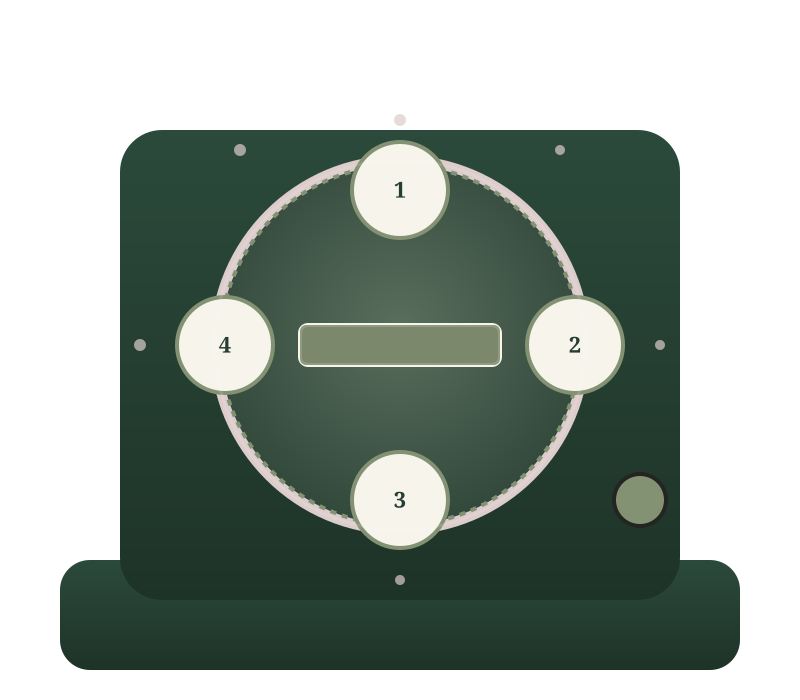

Time plus smell is a proposed scent-based enrichment station for dogs. While you're away, it presents a new scent challenge at scheduled intervals through a rotating, multi-chamber drum — keeping curious noses busy and minds engaged instead of finishing one puzzle and losing interest.
Tap a step to see what happens — and how the device responds.
Why Time plus smell is built the way it is — and how it differs from a conventional dog toy.
A dog's nose is its primary way of understanding the world. Scent work engages the brain deeply — calm, satisfying, and lasting.
A cylinder with multiple chambers sequences activities automatically. One rotation brings a fresh challenge into position.
A single shutter keeps only one chamber open at a time. The dog focuses on the current puzzle instead of every reward at once.
A hand-wound spring drives a mechanical timing system. No batteries, no screens, no electronics to fail.
Chambers take swap-in scent modules. New modules keep the experience novel as the dog learns the old ones.
Concept notice: Time plus smell is a proposed model and does not exist as a real product yet. No performance, safety, or effectiveness claims are made.
Each chamber takes a different activity module. The dog never knows which one is coming next.
The dog uses its nose to locate a hidden reward among scent-bearing compartments.
The dog moves a paw-friendly sliding panel to reveal a hidden reward.
The dog lifts a safe, oversized flap to discover a reward.
The dog investigates scent-bearing puzzle spaces and identifies the correct reward location.
Dogs spend hours alone while their owners are away. Conventional toys offer repetitive tasks that dogs solve quickly — then lose interest. Time plus smell is a proposed enrichment device built on three principles: scent exploration, problem solving, and scheduled variety.
By rotating through different scent-based activities throughout the day, the device aims to keep a dog's environment fresh and engaging — without screens, apps, or disposable parts.
It is important to note: Time plus smell is a concept model only. It does not exist as a real product, and no claims are made about its performance, safety, or effectiveness.

This is a concept product. Register your interest to follow development — no purchase commitment.
Register interest